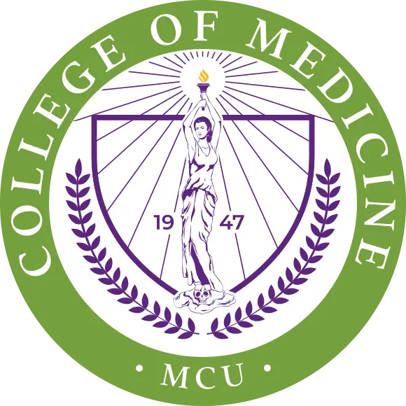
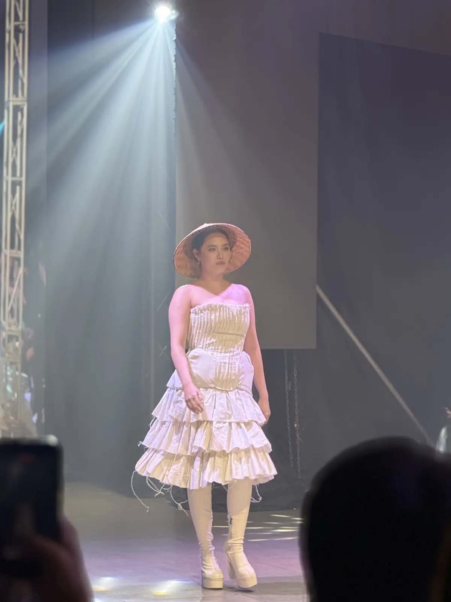
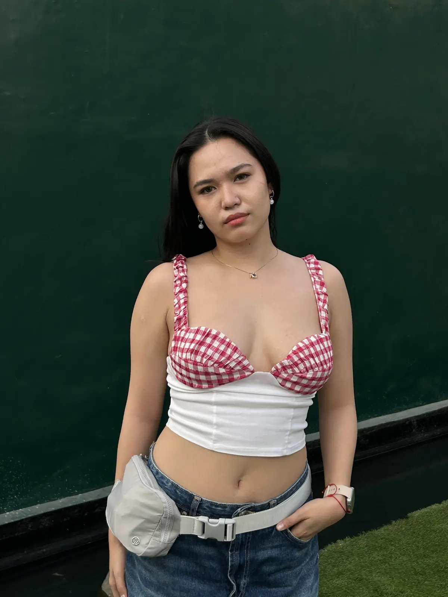

2024
Completed
Bachelor of Science in Medical Biology
De La Salle University, Dasmariñas
College of Science


College ofFrom runway discipline to the science of medicine.
Forensic pathology and meaningful community service.
I am learning to carry every lesson forward
Profile
Caloocan · Cavite · Manila
I was born and raised in Caloocan City and moved to Cavite when I was thirteen.
I began working as a fashion model in 2019 and joined multiple runway shows through 2026. I completed my Bachelor of Science in Medical Biology in 2024, then entered medical school in 2026.
These paths may look different, but both have taught me how to prepare with discipline, adapt under pressure, and keep growing beyond what feels familiar.
“A diverse background can become a strength in the making of a physician.”
Education
2024
De La Salle University, Dasmariñas
College of Science
2026
Manila Central University
College of Medicine

2019 to 2026 Fashion model and runway participant
Experience
MTP Productions
Teaching runway skills strengthened my patience. It taught me to guide others one lesson at a time and never judge anyone by their starting point.
DLSUD College of Science, CSCS-SG
For one year, I helped develop creative materials that supported student activities and communication.
Six months
The experience developed my consistency, customer awareness, and ability to work responsibly in a fast-moving environment.
Learning journey
Biochemistry, Small Group Discussion
The Small Group Discussions showed me that every patient conversation begins with careful attention. Before reaching a conclusion, I must first listen to what the patient feels, thinks, and chooses to share.
Each discussion carries a learning curve. Biochemistry helps me connect a patient's experience with the processes occurring inside the body, turning separate details into a clearer clinical picture.
Regardless of what a patient feels or believes, our purpose remains the same: to understand their needs and help them move toward better health with respect and compassion.

2021
2022
2023
De La Salle University, Dasmariñas
College of Science
Closing reflection
I may not have everything figured out yet, but I am proud of myself for continuing to show up and try. I have faced many challenges, and I am learning that failure does not define me.
I will keep moving forward one step at a time, trusting that every experience will eventually find its place in the physician I am becoming.
Working toward the MD and a future dedicated to giving back to the community.
07 · Contact